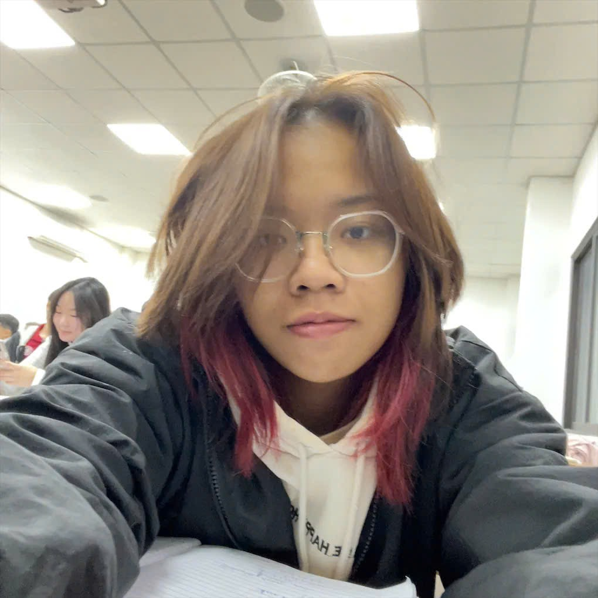

● ● ● profile.exe
> identity: PHẠM KHÁNH LINH
> role: FINANCE STUDENT
> university: FOREIGN TRADE UNIVERSITY
> location: HANOI, VIETNAM
> status: ACTIVE / LEARNING
> _
PKL / SYSTEM
INITIALIZING PORTFOLIOLOADING INTERFACE…● SYSTEM / PERSONAL ARCHIVE 001
Finance Student Foreign Trade University
Building a thoughtful path through finance, data, and the systems that connect them.

01 / ABOUT ME
> identity: PHẠM KHÁNH LINH
> role: FINANCE STUDENT
> university: FOREIGN TRADE UNIVERSITY
> location: HANOI, VIETNAM
> status: ACTIVE / LEARNING
> _
I’m Linh, a Finance student exploring where financial thinking meets practical analysis.
My interests span finance, banking, fintech, Open Banking, data analysis, and business analysis. I enjoy learning how information, decisions, and people move through these systems.
BUILD YOUR OWN PATH.
This portfolio is a living record of what I’m learning, building, and ready to explore next.
02 / ORIGIN
EDUCATION / ACTIVE
03 / MISSIONS
ORGANIZATION
STUDENT COMPETITION
A student competition for students interested in banking and digital transformation.
04 / CREW EXPERIENCE
Business / Marketing Competition
Research · Business Analysis · Presentation
PARTICIPANTCase Competition
Research · Case Analysis · Presentation · Teamwork
PARTICIPANTFinance / Investment Competition
Finance · Research · Analysis
PARTICIPANT05 / DATA LOG
RESEARCH / FINANCE
FINTECH / BANKING
BUSINESS COMPETITION
06 / CYBERWARE
SIGNAL INTERESTS
FINANCEBANKINGFINTECHOPEN BANKINGDATA ANALYSISCuriosity is the interface. Each interest is an area I’m actively learning more about.07 / ESTABLISH CONNECTION
AVAILABLE FOR